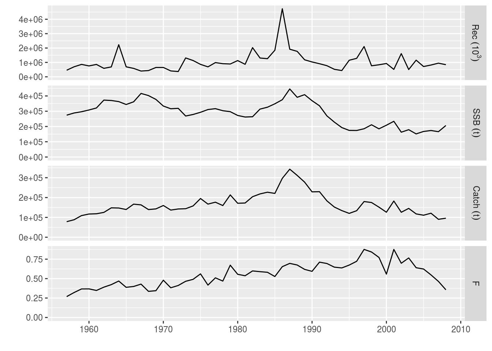
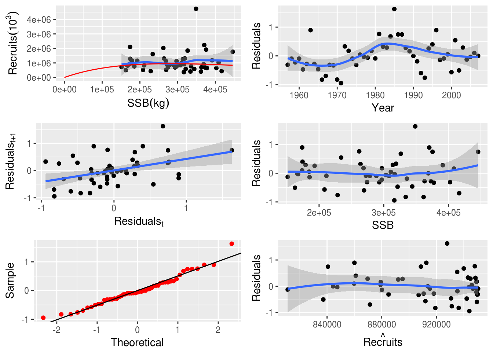
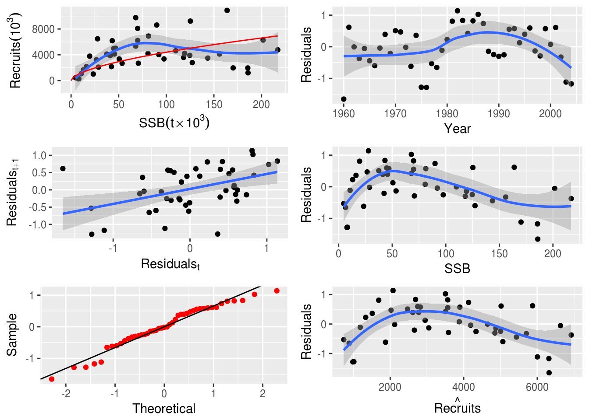
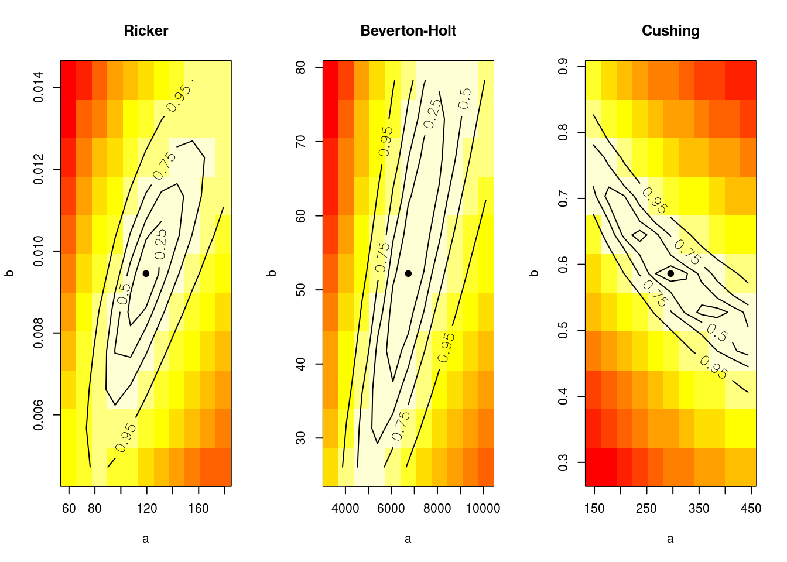
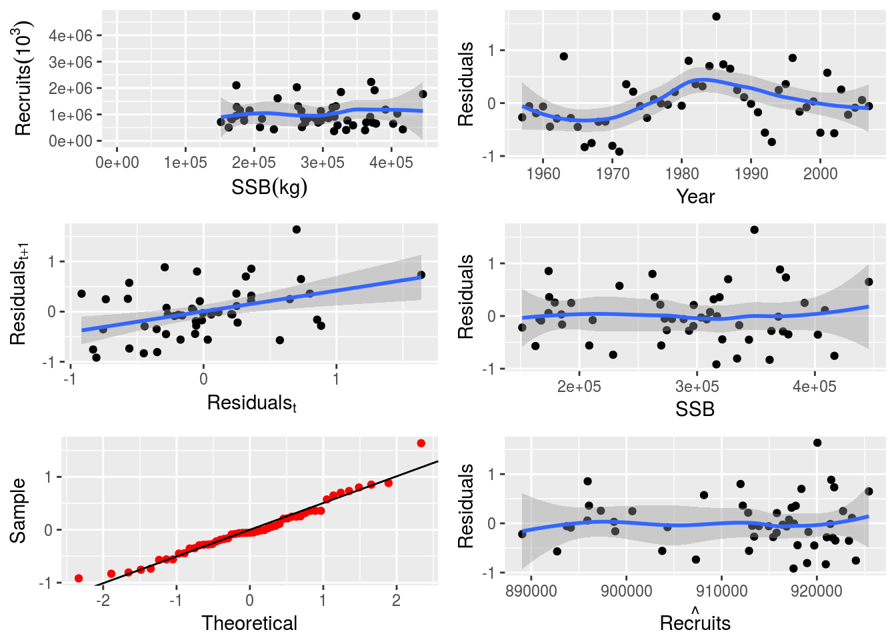
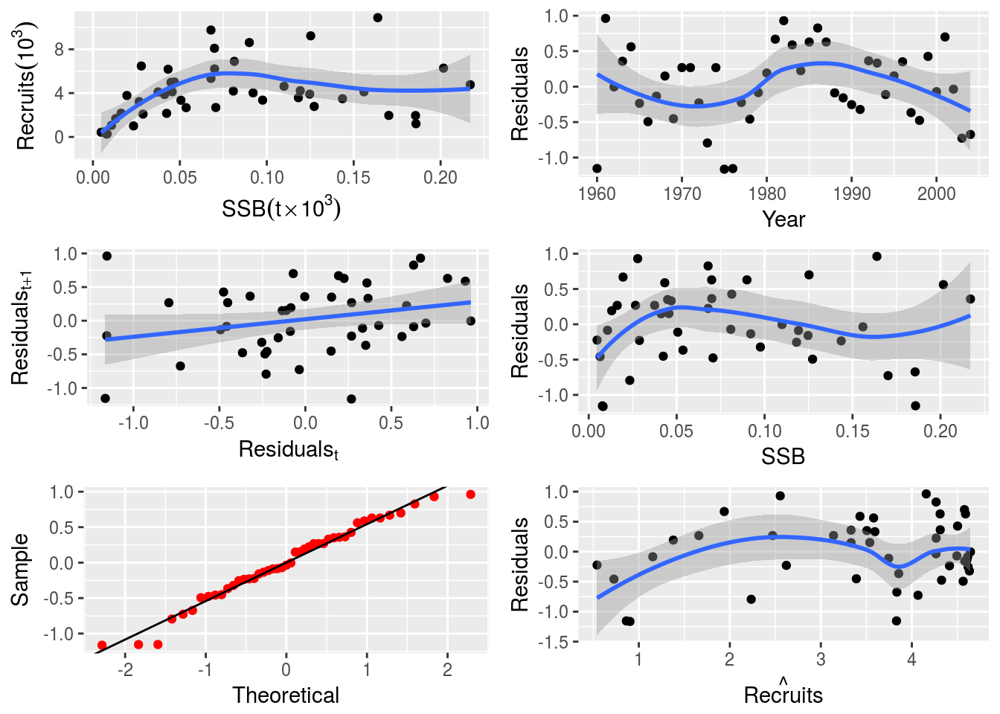

Modelling Stock-Recruitment with FLSR
13 September, 2017
FLSR is an S4 class for Stock-Recruitment (SR) models, an extension of FLModel , and part of the FLCore package. Commonly used or custom-tailored SR models can be fitted directly to FLStock objects, providing estimates of uncertainty. FLSR class objects can then be used to visualize the fitted models, calculate biological reference points using FLBPR, and perform stock projections.
Required packages
To follow this tutorial you should have installed the following packages:
You can do so as follows,
install.packages(c("ggplot2"))
install.packages(c("FLCore"), repos="http://flr-project.org/R")
install.packages(c("ggplotFL"), repos="http://flr-project.org/R")Initially, the libraries need to be called.
library(FLCore)
library(ggplotFL)The user can load and visualize the results of an assessment (VPA) already performed and stored in the ple4 FLStock object.
# Load the ple4 FLStock object
data(ple4)# Plot the assesment output
plot(ple4)
The Stock-Recruitment (SR) relationship
Given that recruitment and spawning stock biomass (SSB) are provided as an output of the assessment, their relationship can be visualized simply by ploting the recruits against the SSB.
# Plot the SSB-Recruits graph
ggplot(aes(ssb, rec), data=model.frame(FLQuants(ple4, "ssb", "rec"))) +
geom_point() + geom_smooth(method="loess")
Working with FLSR objects
An empty FLSR object can be directly created simply by:
sr1 <- FLSR()An FLSR object can be also be created by directly converting an FLStock object:
p4sr <- as.FLSR(ple4)The contents of the FLSR object are the following:
summary(p4sr)An object of class "FLSR"
Name: Plaice in IV
Description: 'rec' and 'ssb' slots obtained from a 'FLStock' object
Quant: age
Dims: age year unit season area iter
1 51 1 1 1 1
Range: min minyear max maxyear
1 1958 1 2008
rec : [ 1 51 1 1 1 1 ], units = 10^3
ssb : [ 1 51 1 1 1 1 ], units = kg
residuals : [ 1 51 1 1 1 1 ], units = NA
fitted : [ 1 51 1 1 1 1 ], units = 10^3
Model: list()
Parameters:
params
iter
1
Log-likelihood: NA(NA)
Variance-covariance: <0 x 0 matrix>In the case of the ple4 FLStock object, recruits are fish of age=1. Hence, the lag between ssb and rec is 1 year. The starting year for SSB is 1957, whereas for recruits it is 1958.
# Outputs the contents of the first year of the rec and ssb slots of the FLSR object
ssb(p4sr)[,1]An object of class "FLQuant"
An object of class "FLQuant"
, , unit = unique, season = all, area = unique
year
age 1957
all 274205
units: kg rec(p4sr)[,1]An object of class "FLQuant"
An object of class "FLQuant"
, , unit = unique, season = all, area = unique
year
age 1958
1 698110
units: 10^3 The user can change the recruitment age by triming the FLStock object while converting it into an FLSR object:
# You can set a different recruitment age, e.g. age 2,
# by trimming the FLStock object as follows:
p4sr2 <-as.FLSR(ple4[-1])In this case, the lag between SSB and recruitment is 2 years. The starting year for SSB is 1957, whereas for recruits it is 1959.
ssb(p4sr2)[,1]An object of class "FLQuant"
An object of class "FLQuant"
, , unit = unique, season = all, area = unique
year
age 1957
all 274205
units: kg rec(p4sr2)[,1]An object of class "FLQuant"
An object of class "FLQuant"
, , unit = unique, season = all, area = unique
year
age 1959
2 568706
units: 10^3 Fitting an SR model
To fit an SR model, a series of commonly-used stock-recruit models are already available, including their corresponding likelihood functions and calculation of initial values. See SRModels for more details and the exact formulation implemented for each of them. Each method is defined as a function returning a list with one or more elements as follows:
modelFormulafor the model, using the slot names (recandssb) to refer to the usual inputsloglFunctionto calculate the loglikelihood of the given model when estimated through Maximum Likelihood Estimation (MLE, seefmle)initialFunctionto provide initial values for all parameters in the minimisation algorithms called byfmleornls. If required, this function also has two attributes,lowerandupper, that give lower and upper limits for the parameter values, respectively. This is used by some of the methods defined inoptim, like"L-BFGS-B".
The model() <– method for FLModel can then be called with the value being a list thus described, the name of the function returning such a list, or the function itself.
The available SR models are: bevholt(), bevholt.ar1(), bevholt.c.a(), bevholt.c.b(), bevholt.d(), bevholt.ndc(), bevholt.sv(), geomean(), logl.ar1(rho, sigma2, obs, hat), ricker(), ricker.ar1(), ricker.c.a(), ricker.c.b(), ricker.d(), ricker.sv(), segreg(), shepherd(), shepherd.ar1(), shepherd.d(), shepherd.d.ar1(), shepherd.ndc(), shepherd.ndc.ar1(), sv2ab(steepness, vbiomass, spr0, model).
The user can assign e.g. a Ricker SR model to the FLStock object. The user can also obtain the model formula of the fitted model, as well as the log-likelihood. The fmle method fits the model specified in an FLModel object using R’s optim function to minimise the negative of the log-likelihood function, in the logl slot, through calls to the minimisaton routine. The default algorithm for optim is Nelder-Mead; however other options are available (e.g. "L-BFGS-B", see ?optim).
# Assign a Ricker SR model and fit it with fmle (which uses logl and R's optim model fitting through MLE)
model(p4sr) <- ricker()
p4sr<-fmle(p4sr)
## model formula
# model(p4sr)
## log-likelihood
# logl(p4sr)The user can extract the initial parameters used by the optimiser, as well as the lower and upper limits of these parameters.
# initial values for the optimiser
initial(p4sr)function (rec, ssb)
{
res <- coefficients(lm(log(c(rec)/c(ssb)) ~ c(ssb)))
return(FLPar(a = max(exp(res[1])), b = -max(res[2])))
}
<environment: 0xd5193e8>
attr(,"lower")
[1] -Inf -Inf
attr(,"upper")
[1] Inf Inf# lower and upper limits for the parameters
lower(p4sr)[1] -Inf -Infupper(p4sr)[1] Inf InfDiagnostic plots can be produced by simply calling the plot function on the FLSR object.
plot(p4sr)
NS Herring stock-recruitment dataset example
The user can experiment with North Sea herring data where a Ricker model has already been fitted.
data(nsher)
summary(nsher)An object of class "FLSR"
Name:
Description:
Quant: age
Dims: age year unit season area iter
1 45 1 1 1 1
Range: min minyear max maxyear
0 1960 0 2004
rec : [ 1 45 1 1 1 1 ], units = 10^3
ssb : [ 1 45 1 1 1 1 ], units = t*10^3
residuals : [ 1 45 1 1 1 1 ], units = NA
fitted : [ 1 45 1 1 1 1 ], units = 10^3
Model: rec ~ a * ssb * exp(-b * ssb)
Parameters:
params
iter a b
1 119 0.00945
Log-likelihood: 15.862(0)
Variance-covariance:
a b
a 255.33882 1.809e-02
b 0.01809 1.993e-06The user can change the fitted SR model if so desired. Below bevholt() and cushing() models are used.
# Assign nsher with ricker model to a new object
nsher_ri <- nsher
# change model to bevholt
model(nsher) <- bevholt()
# fit through MLE
nsher_bh <- fmle(nsher)
# change model to cushing
model(nsher) <- cushing()
# fit through MLE
nsher_cs <- fmle(nsher)The three fits can then be inspected visually.
plot(nsher_ri)
plot(nsher_bh)plot(nsher_cs)
They can also be compared by using the AIC,
print(paste0('Ricker: ',round(AIC(nsher_ri),4),' ',
'Beverton-Holt: ',round(AIC(nsher_bh),4),' ',
'Cushing: ',round(AIC(nsher_cs),4)))[1] "Ricker: -27.7245 Beverton-Holt: -20.4004 Cushing: -10.2889"or Schwarz’s Bayesian Information Criterion.
# this chunk plots the fits from the 3 different SR models
print(paste0('Ricker: ',round(BIC(nsher_ri),4),' ',
'Beverton-Holt: ',round(BIC(nsher_bh),4),' ',
'Cushing: ',round(BIC(nsher_cs),4)))[1] "Ricker: -24.1112 Beverton-Holt: -16.787 Cushing: -6.6756"Additionally, a profiling of the model parameters can be visualised for each fitted model.
# Profile the likelihood to check the fit
par(mfrow=c(1,3))
profile(nsher_ri, main="Ricker")
profile(nsher_bh, main="Beverton-Holt")
profile(nsher_cs, main="Cushing")
Advanced topics
Please note: some of the code below is provided for demonstration purposes only, as the used datasets are not necessarily adequate for estimating more than 2 parameters of an SR model.
SR model parameters can also be fixed. In this case, steepness is fixed to a value of 0.8. Details on the model parameterization can be found in SRmodels.
# Fit a bevholtSV model with fixed steepness at 0.8
model(p4sr) <- bevholtSV
p4sr <- fmle(p4sr, fixed = list(s = 0.8))# Plot the SR model and show parameters
par(mfrow=c(1,1))
plot(p4sr)
params(p4sr)An object of class "FLPar"
params
s v spr0
8.00e-01 1.44e+05 1.62e-01
units: NA Custom SR models can be implemented. To define a new model requires the specification of its
- functional form,
- likelihood,
- bounds, and
- starting values.
For example, the user can fit the Deriso-Schnute model below.
# Define a custom SR model (Deriso Schnute)
dersch<-function(){
## log-likelihood
logl <- function(a,b,c,rec,ssb) {
res<-loglAR1(log(rec), log(a*ssb*(1-b*c*ssb)^(1/c)))
return(res)
}
## initial parameter values
initial <- structure(function(rec, ssb){
slopeAt0 <- max(quantile(c(rec)/c(ssb), 0.9, na.rm = TRUE))
maxRec <- max(quantile(c(rec), 0.75, na.rm = TRUE))
### Bevholt by default c=-1
return(FLPar(a=slopeAt0, b=1/maxRec, c=-1))},
lower=rep(-Inf, 3),
upper=rep( Inf, 3))
## model to be fitted
model <- rec~a*ssb*(1-b*c*ssb)^(1/c)
return(list(logl = logl, model = model, initial = initial))}# Fit the custom SR model
model(nsher)<-dersch()
nsher_dersch<-fmle(nsher,fixed=list(c=-1))# Plot the custom SR model
plot(nsher_dersch)
An SR model with AR1 autocorrelation can be also be fitted.
# Define a custom SR AR1 model
rickerAR1 <- function()
{
## log-likelihood
logl <- function(a, b, rho, rec, ssb)
loglAR1(log(rec), log(a*ssb*exp(-b*ssb)), rho=rho)
## initial parameter values
initial <- structure(function(rec, ssb) {
res <-coefficients(lm(c(log(rec/ssb))~c(ssb)))
return(FLPar(a=max(exp(res[1])), b=-max(res[2]), rho=0))},
lower=rep(-Inf, 3),
upper=rep( Inf, 3))
## model to be fitted
model <- rec~a*ssb*exp(-b*ssb)
return(list(logl=logl, model=model, initial=initial))}# Fit the custom SR AR1 model
model(nsher)<-rickerAR1()
nsherAR1 <-fmle(nsher)# Plot the custom SR AR1 model
plot(nsherAR1) Finally, an SR model with covariates (e.g. the NAO index) can be used to model environmental effects on the stock recruitment relationship.
Finally, an SR model with covariates (e.g. the NAO index) can be used to model environmental effects on the stock recruitment relationship.
# Read in the data to represent the covariate
nao <-read.table(url("https://www.esrl.noaa.gov/psd/data/correlation/nao.data"),
skip=1, nrow=62, na.strings="-99.90")
dnms <-list(quant="nao", year=1948:2009, unit="unique", season=1:12, area="unique")
nao <-FLQuant(unlist(nao[,-1]), dimnames=dnms, units="nao")
# Include NAO as the covariate (covar) and adjust the model.
# (Note that covar must be an FLQuants with a single component called `covar`
# that matches the year span of the data.)
nsherCovA <- nsher
nsherCovA <- transform(nsherCovA,ssb=ssb/1000,rec=rec/1000)
# Define the custom SR model with covariate
# (modified so temperature affects larval survival)
rickerCovA <- function(){
## log likelihood
logl <- function(a, b, c, rec, ssb, covar){
loglAR1(log(rec), log(a*(1+c*covar[[1]])*ssb*exp(-b*ssb)))}
## initial parameter values
initial <- structure(function(rec, ssb, covar) {
res <-coefficients(lm(c(log(rec/ssb))~c(ssb)))
return(FLPar(a=max(exp(res[1])), b=-max(res[2]), c=0.0))},
lower=rep(-Inf, 3),
upper=rep( Inf, 3))
## model to be fitted
model <- rec~a*(1+c*covar[[1]])*ssb*exp(-b*ssb)
return(list(logl=logl, model=model, initial=initial))}# Fit the custom SR model with covariate
model(nsherCovA)<-rickerCovA()
covar(nsherCovA)<-FLQuants(covar=seasonMeans(trim(nao, year=dimnames(ssb(nsherCovA))$year)))
nsherCovA <-fmle(nsherCovA,fixed=list(c=0))# Plot the custom SR model with covariate
plot(nsherCovA)
References
Beverton, R.J.H. and Holt, S.J. (1957) On the dynamics of exploited fish populations. MAFF Fish. Invest., Ser: II 19, 533. ISBN: 1930665946
Needle, C.L. Recruitment models: diagnosis and prognosis. Reviews in Fish Biology and Fisheries 11: 95-111, 2002. DOI: https://doi.org/10.1023/A:1015208017674
Ricker, W.E. (1954) Stock and recruitment. J. Fish. Res. Bd Can. 11, 559-623. DOI: https://doi.org/10.1139/f54-039
Shepherd, J.G. (1982) A versatile new stock-recruitment relationship for fisheries and the construction of sustainable yield curves. J. Cons. Int. Explor. Mer 40, 67-75. DOI: https://doi.org/10.1093/icesjms/40.1.7
More information
- You can submit bug reports, questions or suggestions on this tutorial at https://github.com/flr/doc/issues.
- Or send a pull request to https://github.com/flr/doc/
- For more information on the FLR Project for Quantitative Fisheries Science in R, visit the FLR webpage, http://flr-project.org.
Software Versions
- R version 3.4.1 (2017-06-30)
- FLCore: 2.6.5
- ggplotFL: 2.6.1
- ggplot2: 2.2.1
- Compiled: Wed Sep 13 16:31:51 2017
License
This document is licensed under the Creative Commons Attribution-ShareAlike 4.0 International license.